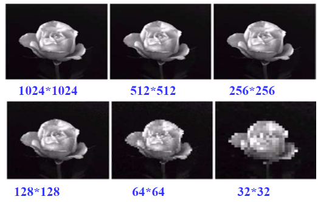
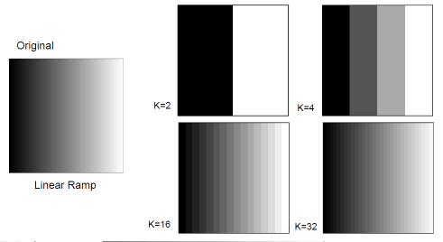
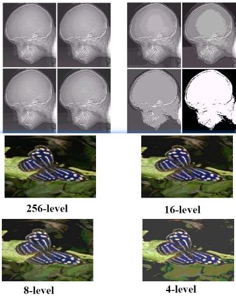

自学笔记，单词翻译可能出错
第 1 章 绪论
图像：对客观世界视觉属性的描述
视觉：图像获取、基于图像的感知
计算机视觉的目标：让机器“理解”图像和视频
计算机视觉的应用：
- 智能监控
- 无人车
- 医学影像分析
- 机器人（定位、导航）
- 增强/混合现实
- 图像检索
- 智能图像管理/编辑
- 刷脸
- 面孔和数码相机，笑容检测
- 图像拼接
- 体感游戏
- 视觉特效
计算机视觉的难点/挑战：
- 光照 Illumination
- 物体姿势 Object pose
- 噪声 Clutter
- 遮蔽 Occlusions
- 外观识别 Intra-class appearance
- 视点 Viewpoint
- 类内差异 Intra-Category Variation，沙发有很多种
- 复杂度 Complexity
人眼的成像：
- 物体在视网膜上的成像为倒影、视网膜位于球面上
- 人眼对光线有很强的环境适应能力
- 人眼对亮度的感受与光线强度成对数关系
- 马赫带
- 人对亮度的感觉：亮度的相对性
- 对比引起的相对性
- 前景与背景的相对性
- 整体性：主观轮廓
图像获取方式的变化 Camera Obscura：
- 暗箱，点投影
- 绘画
- 针孔相机 Pinhole Camera
相机：
- 光圈 Aperture，或者说孔径 Pinhole Size：进光量
- 镜头作用：保持图像清晰对焦，同时收集大面积的光线
- 薄透镜：
- 景深：可以容忍模糊的图像平面之间的距离
- 视野：取决于焦距
数字相片：
- 底片被传感器阵列替代
- 电荷耦合器件阵列 (Charge-Coupled device，CCD)
- 图片离散成像素
- 光强量化为像素值
- 颜色传感器：将进光用不同的过滤层转换为传感阵列，ceil 的颜色缺失可从相邻 ceil 中获取
图像 -> 采样 -> 量化：
采样
- 分辨率，采样间隔
- 粗采样 Coarse Sampling
- 细采样 Finer Sampling

量化
信号量化 $K=2^n $

影响图像灰度

文件格式：
矢量图 vector images，
.ai .eps .ps ...- 优点：缩放无混叠 aliasing 和 模糊 blur
- 缺点：难以获取，应用有限
位图 bitmap
- 优缺点与矢量图相反
- 矢量图进行光栅化 rasterize 可以得到位图
GIF — Graphics Interchange Format
- 8 位真彩
- 可以进行抖色 dither，
- 优点：生动 animated、易懂 transparent